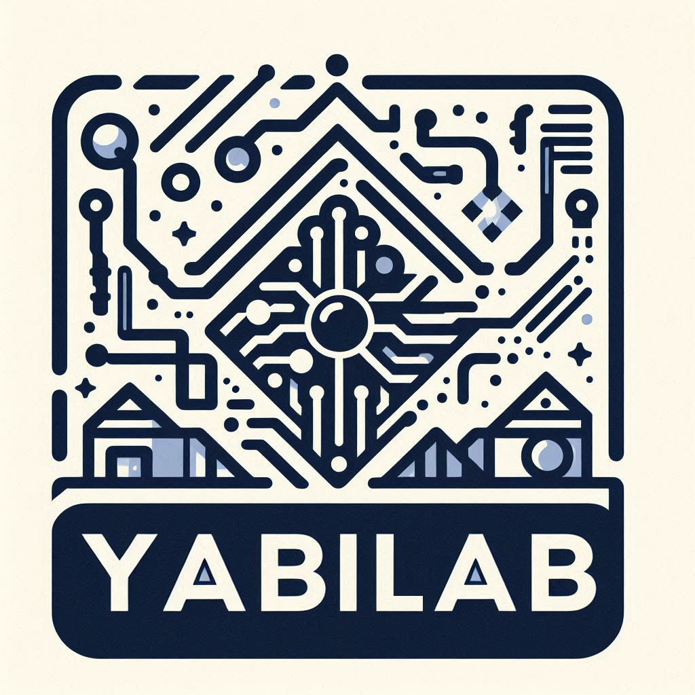

本次更新
載入中

EDGE SPORT YABILAB Evidence Weekly本週證據摘要
edgeSport4Podcast
每週由 Codex 把完整週報改寫成自然的英文雙人對談，以本機建立的 Ying 女聲與 Bing 男聲共同提問、回答、交換觀點，討論研究數據與發現、運動醫學／運動科學知識及可執行建議。
Integrated weekly brief
每篇整合週報都將最新研究放回課程基礎與先前週報中比較；文章層級、資料限制與原始來源連結會一併保留。
題錄與全文由本機流程蒐集；研究結論、比較表與圖表通過來源及結構驗證後公開，並保留完整的研究脈絡與原始來源。
Cumulative research radar
自動蒐集提供候選題錄與受控趨勢；只有完成本機全文審閱的文獻，才會公開解讀、原創表格與資料視覺化。
本次更新
載入中
本週題錄趨勢
題名與來源 metadata 的受控關鍵詞訊號，不代表療效、證據品質或臨床建議。
公開內容不重製受版權保護的全文網頁、PDF、原始表格或圖像。
Cumulative knowledge archive
月度深度議題、每週整合週報、歷史主題與歷次蒐集的研究題錄都永久加入索引；可用關鍵字、內容類型、年份、主題與運動項目回查。
正在整理本期證據...
Journal watch
期刊題錄由 PubMed 追蹤；學會資訊只連向官方網站。新增 RSS 前會先驗證其官方性與穩定性，再納入自動蒐集。
Official organizations
Editorial method
這裡不把單篇研究變成萬用答案；每份週刊都必須說清楚證據從哪裡來、適用在哪裡，以及哪些地方仍不確定。
以運動項目、族群、訓練週期與實際決策問題界定閱讀範圍。
優先閱讀臨床指引、共識、系統性回顧與研究全文，辨認設計與限制。
把結論連到可測量的訓練、評估、恢復或跨專業溝通決策。
每個主張保留來源、週次與脈絡，方便日後修正與擴充。